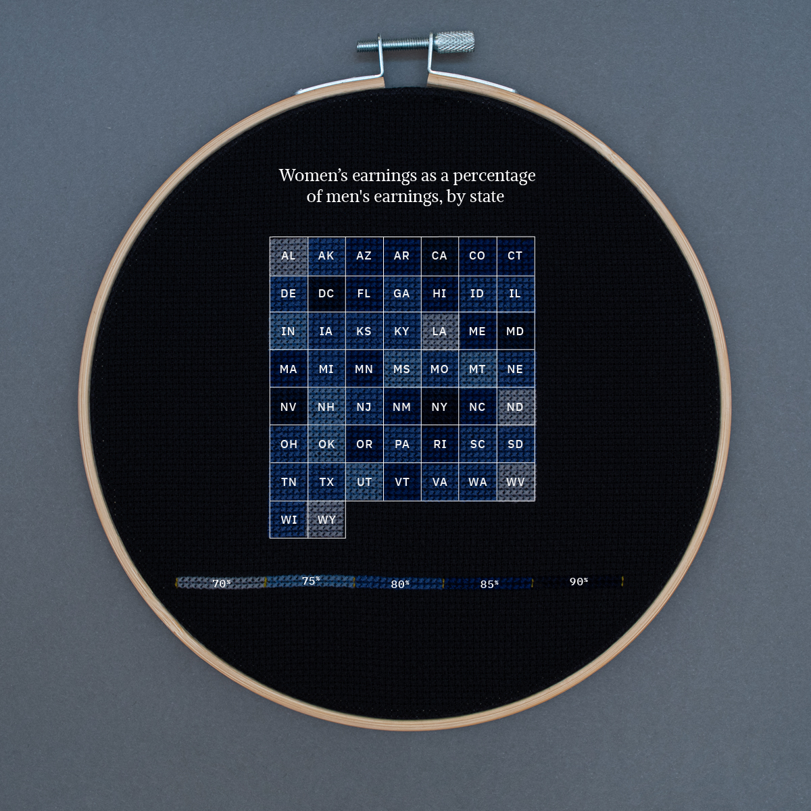
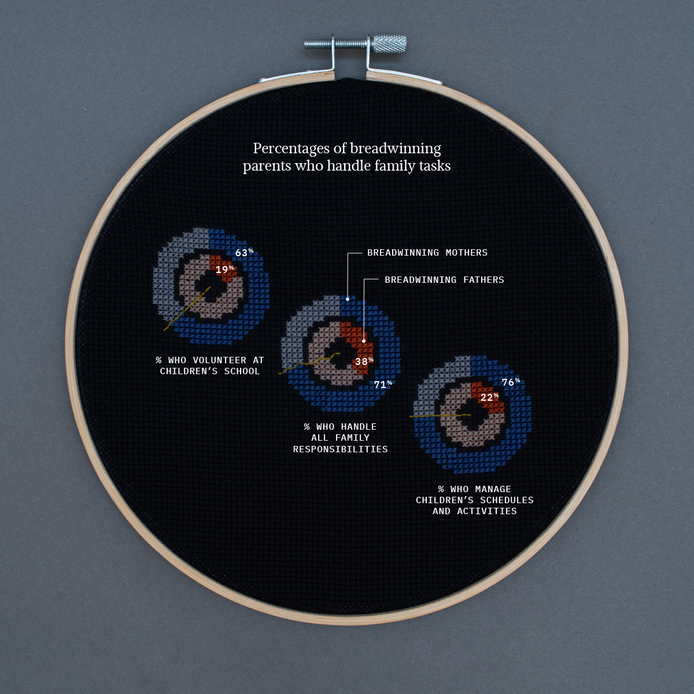
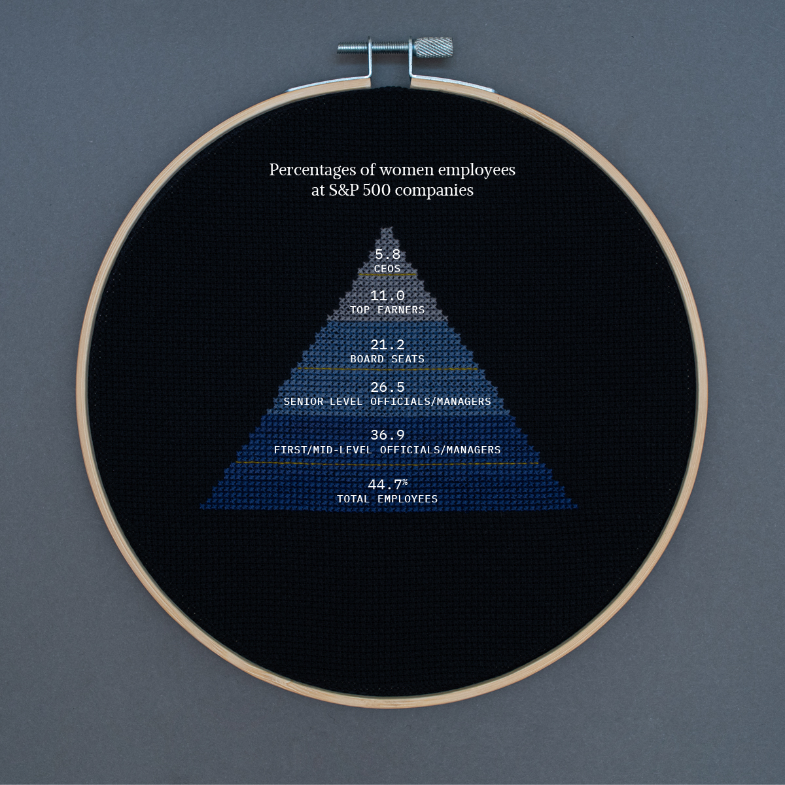
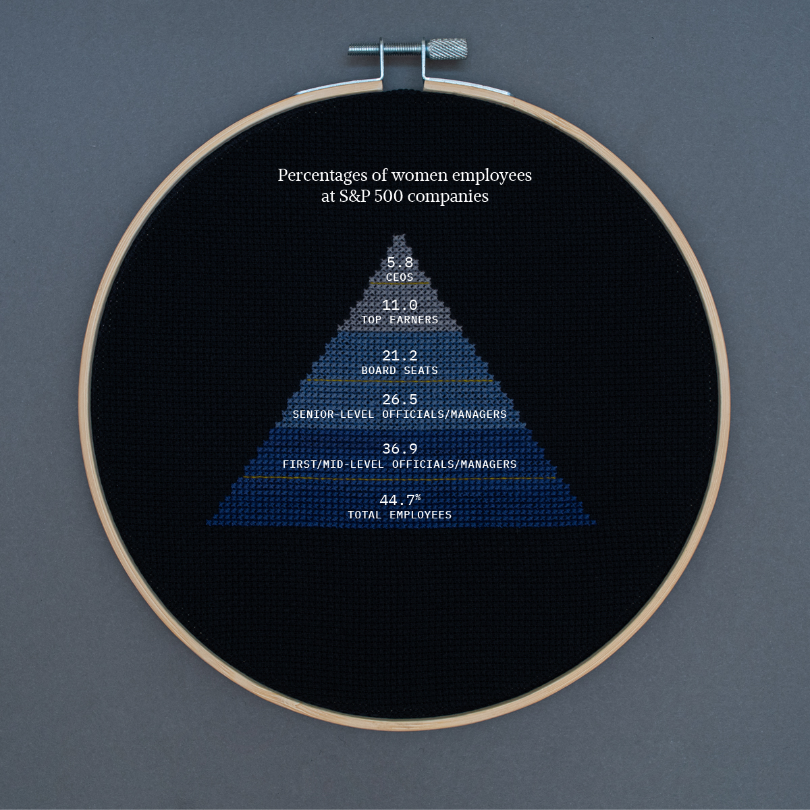
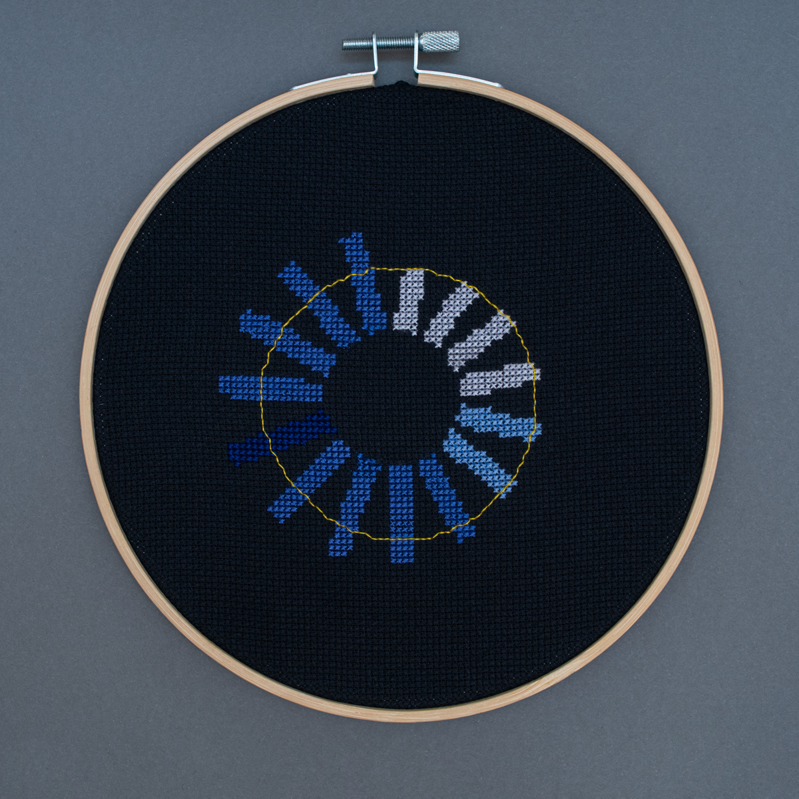
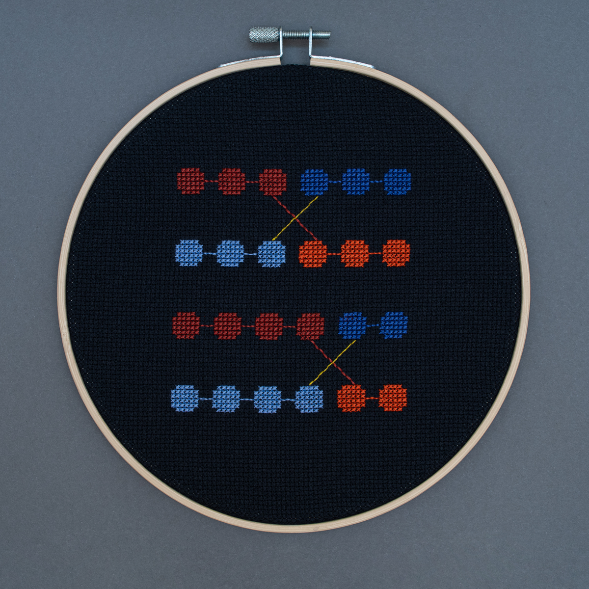
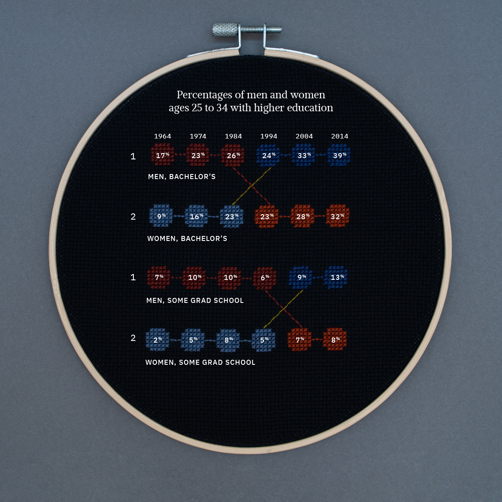

Women employed full-time do more unpaid work and have less leisure time than men.
Source: US Bureau of Labor Statistics


Having children negatively impacts wages and earnings for women.
Source: NATIONAL BUREAU OF ECONOMIC RESEARCH

LGBTQ women and women in leadership positions are likely to face sexual harassment at work.
Source: Women in the Workplace

Women face the largest gender pay gaps in Alabama, Louisiana, North Dakota, West Virginia and Wyoming.
Source: U.S. Census Bureau
Women are far less likely to be promoted than men, particularly Black and Latina women.
Source: Women in the Workplace

Breadwinning mothers are far more likely to handle family tasks and responsibilities than breadwinning fathers.
Source: Businesswire
 

Women are markedly absent from leadership and high-level roles at top companies.
Source: Catalyst

Women who work are much more likely to sacrifice their careers for family than men who work.
Source: Pew Research Center


Women on average make just 68% of what white men make, while Black women make 64% and Latina women make 54%.
Source: Infoplease

The rate of women in the workforce peaked in 2000 at 60%—and has been in steady decline ever since.
Source: U.S. BUREAU OF LABOR STATISTICS


Women with bachelor’s degrees have outnumbered men since 1994, while women with graduate school experience have outnumbered men since 2004.
Source: White House Council of Economic Advisers


To make the same amount that white men earn in one year (365 days), Asian women need to work 407 days, while women need to work 465 days, Black women need to work 591 days, and Latina women need to work 672 days.
Source: Business Insider
About the Project
Women’s Work was created by Olivia Johnson as a reaction to the discrimination that women, notably women of color, continue to face in both the workforce and at home. The medium of cross stitch, a form of art that tends to be labeled as kitsch and a women’s hobby craft, was intentionally utilized to emphasize the fact that women’s labor is routinely dismissed and undervalued.